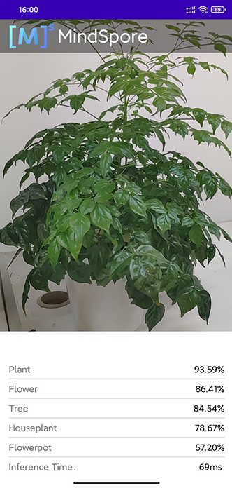

实现一个图像分类应用（C++）
Android C++ 全流程 模型转换 模型加载 推理应用 数据准备 初级 中级 高级

概述
我们推荐你从端侧Android图像分类demo入手，了解MindSpore Lite应用工程的构建、依赖项配置以及相关API的使用。
本教程基于MindSpore团队提供的Android“端侧图像分类”示例程序，演示了端侧部署的流程。
选择图像分类模型。
将模型转换成MindSpore Lite模型格式。
在端侧使用MindSpore Lite推理模型。详细说明如何在端侧利用MindSpore Lite C++ API（Android JNI）和MindSpore Lite图像分类模型完成端侧推理，实现对设备摄像头捕获的内容进行分类，并在APP图像预览界面中，显示出最可能的分类结果。
你可以在这里找到Android图像分类模型和图像分类示例代码。
本示例中讲述了C++ API的应用方法，此外MindSpore Lite还支持Java API。关于Java API的使用请参考图像分割demo。
我们提供了本示例对应的APK文件，你可扫描下方的二维码或直接下载APK文件，并部署到Android设备后使用。

选择模型
MindSpore团队提供了一系列预置终端模型，你可以在应用程序中使用这些预置的终端模型。
可下载MindSpore Model Zoo中图像分类模型。
同时，你也可以使用预置模型做迁移学习，以实现自己的图像分类任务。
转换模型
如果预置模型已经满足你要求，请跳过本章节。 如果你需要对MindSpore提供的模型进行重训，重训完成后，需要将模型导出为.mindir格式。然后使用MindSpore Lite模型转换工具将.mindir格式转换成.ms格式。
以mobilenetv2模型为例，如下脚本将其转换为MindSpore Lite模型用于端侧推理。
call converter_lite --fmk=MINDIR --modelFile=mobilenetv2.mindir --outputFile=mobilenetv2
部署应用
接下来介绍如何构建和执行mindspore Lite端侧图像分类任务。
运行依赖
Android Studio >= 3.2 (推荐4.0以上版本)
NDK 21.3
CMake 3.10.2
Android SDK >= 26
JDK >= 1.8
构建与运行
在Android Studio中加载本示例源码，并安装相应的SDK（指定SDK版本后，由Android Studio自动安装）。

启动Android Studio后，点击
File->Settings->System Settings->Android SDK，勾选相应的SDK。如下图所示，勾选后，点击OK，Android Studio即可自动安装SDK。
（可选）若安装时出现NDK版本问题，可手动下载相应的NDK版本（本示例代码使用的NDK版本为21.3），并在
Project Structure的Android NDK location设置中指定NDK的位置。
连接Android设备，运行图像分类应用程序。
通过USB连接Android设备调试，点击
Run 'app'即可在你的设备上运行本示例项目。
Android Studio连接设备调试操作，可参考https://developer.android.com/studio/run/device?hl=zh-cn。
手机需开启“USB调试模式”，Android Studio才能识别到手机。 华为手机一般在
设置->系统和更新->开发人员选项->USB调试中打开“USB调试模式”。在Android设备上，点击“继续安装”，安装完即可查看到设备摄像头捕获的内容和推理结果。

识别结果如下图所示。

示例程序详细说明
本端侧图像分类Android示例程序分为JAVA层和JNI层，其中，JAVA层主要通过Android Camera 2 API实现摄像头获取图像帧，以及相应的图像处理等功能；JNI层在Runtime中完成模型推理的过程。
此处详细说明示例程序的JNI层实现，JAVA层运用Android Camera 2 API实现开启设备摄像头以及图像帧处理等功能，需读者具备一定的Android开发基础知识。
示例程序结构
app
├── src/main
│ ├── assets # 资源文件
| | └── model # 模型文件
| | └── mobilenetv2.ms # 存放的模型文件
│ |
│ ├── cpp # 模型加载和预测主要逻辑封装类
| | ├── ..
| | ├── mindspore-lite-{version}-android-{arch} # MindSpore Lite版本
| | ├── MindSporeNetnative.cpp # MindSpore调用相关的JNI方法
│ | └── MindSporeNetnative.h # 头文件
| | └── MsNetWork.cpp # MindSpore接口封装
│ |
│ ├── java # java层应用代码
│ │ └── com.mindspore.classification
│ │ ├── gallery.classify # 图像处理及MindSpore JNI调用相关实现
│ │ │ └── ...
│ │ └── widget # 开启摄像头及绘制相关实现
│ │ └── ...
│ │
│ ├── res # 存放Android相关的资源文件
│ └── AndroidManifest.xml # Android配置文件
│
├── CMakeList.txt # cmake编译入口文件
│
├── build.gradle # 其他Android配置文件
├── download.gradle # 工程依赖文件下载
└── ...
配置MindSpore Lite依赖项
Android JNI层调用MindSpore C++ API时，需要相关库文件支持。可通过MindSpore Lite源码编译生成mindspore-lite-{version}-android-{arch}.tar.gz库文件包并解压缩（包含libmindspore-lite.so库文件和相关头文件），在本例中需使用生成带图像预处理模块的编译命令。
version：输出件版本号，与所编译的分支代码对应的版本一致。
arch：操作系统，arm64或arm32。
本示例中，build过程由app/download.gradle文件自动下载MindSpore Lite版本文件，并放置在app/src/main/cpp/目录下。
注： 若自动下载失败，请手动下载操作系统为Android-aarch64/Android-aarch32的MindSpore Lite 模型推理框架相关库文件mindspore-lite-{version}-android-{arch}.tar.gz，解压后将mindspore-lite-{version}-android-{arch}的文件夹拷贝到src/main/cpp目录下。
android{
defaultConfig{
externalNativeBuild{
cmake{
arguments "-DANDROID_STL=c++_shared"
}
}
ndk{
abiFilters'armeabi-v7a', 'arm64-v8a'
}
}
}
在app/CMakeLists.txt文件中建立.so库文件链接，如下所示。
# ============== Set MindSpore Dependencies. =============
include_directories(${CMAKE_SOURCE_DIR}/src/main/cpp)
include_directories(${CMAKE_SOURCE_DIR}/src/main/cpp/${MINDSPORELITE_VERSION}/inference)
include_directories(${CMAKE_SOURCE_DIR}/src/main/cpp/${MINDSPORELITE_VERSION}/inference/include)
include_directories(${CMAKE_SOURCE_DIR}/src/main/cpp/${MINDSPORELITE_VERSION}/inference/minddata/include)
add_library(mindspore-lite SHARED IMPORTED)
add_library(minddata-lite SHARED IMPORTED)
set_target_properties(mindspore-lite PROPERTIES IMPORTED_LOCATION
${CMAKE_SOURCE_DIR}/src/main/cpp/${MINDSPORELITE_VERSION}/inference/lib/libmindspore-lite.so)
set_target_properties(minddata-lite PROPERTIES IMPORTED_LOCATION
${CMAKE_SOURCE_DIR}/src/main/cpp/${MINDSPORELITE_VERSION}/inference/minddata/lib/libminddata-lite.so)
# --------------- MindSpore Lite set End. --------------------
# Link target library.
target_link_libraries( # Specifies the target library.
mlkit-label-MS
# --- mindspore ---
minddata-lite
mindspore-lite
# --- other dependencies.---
-ljnigraphics
android
# Links the target library to the log library
${log-lib}
)
下载及部署模型文件
从MindSpore Model Hub中下载模型文件，本示例程序中使用的终端图像分类模型文件为mobilenetv2.ms，同样通过app/download.gradle脚本在APP构建时自动下载，并放置在app/src/main/assets/model工程目录下。
注：若下载失败请手工下载模型文件mobilenetv2.ms。
编写端侧推理代码
在JNI层调用MindSpore Lite C++ API实现端侧推理。
推理代码流程如下，完整代码请参见MindSporeNetnative.cpp。
加载MindSpore Lite模型文件，构建上下文、会话以及用于推理的计算图。
加载模型文件：
在Android的Java层读取模型文件，转换成ByteBuffer类型文件
model_buffer，通过JNI调用传输到C++层。最终将model_buffer转换成char类型文件modelBuffer。// Buffer is the model data passed in by the Java layer jlong bufferLen = env->GetDirectBufferCapacity(model_buffer); if (0 == bufferLen) { MS_PRINT("error, bufferLen is 0!"); return (jlong) nullptr; } char *modelBuffer = CreateLocalModelBuffer(env, model_buffer); if (modelBuffer == nullptr) { MS_PRINT("modelBuffer create failed!"); return (jlong) nullptr; }
构建上下文、会话以及用于推理的计算图：
构建上下文，设置会话参数。通过上下文和模型数据创建会话。
// To create a MindSpore network inference environment. void **labelEnv = new void *; MSNetWork *labelNet = new MSNetWork; *labelEnv = labelNet; mindspore::lite::Context *context = new mindspore::lite::Context; context->thread_num_ = num_thread; context->device_list_[0].device_info_.cpu_device_info_.cpu_bind_mode_ = mindspore::lite::NO_BIND; context->device_list_[0].device_info_.cpu_device_info_.enable_float16_ = false; context->device_list_[0].device_type_ = mindspore::lite::DT_CPU; labelNet->CreateSessionMS(modelBuffer, bufferLen, context); delete context;
基于模型文件
modelBuffer构建用于推理的计算图。void MSNetWork::CreateSessionMS(char *modelBuffer, size_t bufferLen, mindspore::lite::Context *ctx) { session_ = mindspore::session::LiteSession::CreateSession(ctx); if (session_ == nullptr) { MS_PRINT("Create Session failed."); return; } // Compile model. model_ = mindspore::lite::Model::Import(modelBuffer, bufferLen); if (model_ == nullptr) { ReleaseNets(); MS_PRINT("Import model failed."); return; } int ret = session_->CompileGraph(model_); if (ret != mindspore::lite::RET_OK) { ReleaseNets(); MS_PRINT("CompileGraph failed."); return; } }
将输入图片转换为传入MindSpore模型的Tensor格式。
将待检测图片
srcBitmap进行尺寸裁剪并转换为LiteMat格式lite_norm_mat_cut。对其宽高以及通道数信息转换成float格式数据dataHWC。最终把dataHWC拷贝到MindSpore模型的Tensor输入inTensor中。if (!BitmapToLiteMat(env, srcBitmap, &lite_mat_bgr)) { MS_PRINT("BitmapToLiteMat error"); return NULL; } if (!PreProcessImageData(lite_mat_bgr, &lite_norm_mat_cut)) { MS_PRINT("PreProcessImageData error"); return NULL; } ImgDims inputDims; inputDims.channel = lite_norm_mat_cut.channel_; inputDims.width = lite_norm_mat_cut.width_; inputDims.height = lite_norm_mat_cut.height_; // Get the MindSpore inference environment which created in loadModel(). void **labelEnv = reinterpret_cast<void **>(netEnv); if (labelEnv == nullptr) { MS_PRINT("MindSpore error, labelEnv is a nullptr."); return NULL; } MSNetWork *labelNet = static_cast<MSNetWork *>(*labelEnv); auto mSession = labelNet->session(); if (mSession == nullptr) { MS_PRINT("MindSpore error, Session is a nullptr."); return NULL; } MS_PRINT("MindSpore get session."); auto msInputs = mSession->GetInputs(); if (msInputs.size() == 0) { MS_PRINT("MindSpore error, msInputs.size() equals 0."); return NULL; } auto inTensor = msInputs.front(); float *dataHWC = reinterpret_cast<float *>(lite_norm_mat_cut.data_ptr_); // Copy dataHWC to the model input tensor. memcpy(inTensor->MutableData(), dataHWC, inputDims.channel * inputDims.width * inputDims.height * sizeof(float));
调整输入图片的尺寸，以及数据处理详细算法。
bool PreProcessImageData(const LiteMat &lite_mat_bgr, LiteMat *lite_norm_mat_ptr) { bool ret = false; LiteMat lite_mat_resize; LiteMat &lite_norm_mat_cut = *lite_norm_mat_ptr; ret = ResizeBilinear(lite_mat_bgr, lite_mat_resize, 256, 256); if (!ret) { MS_PRINT("ResizeBilinear error"); return false; } LiteMat lite_mat_convert_float; ret = ConvertTo(lite_mat_resize, lite_mat_convert_float, 1.0 / 255.0); if (!ret) { MS_PRINT("ConvertTo error"); return false; } LiteMat lite_mat_cut; ret = Crop(lite_mat_convert_float, lite_mat_cut, 16, 16, 224, 224); if (!ret) { MS_PRINT("Crop error"); return false; } std::vector<float> means = {0.485, 0.456, 0.406}; std::vector<float> stds = {0.229, 0.224, 0.225}; SubStractMeanNormalize(lite_mat_cut, lite_norm_mat_cut, means, stds); return true; }
对输入Tensor按照模型进行推理，获取输出Tensor，并进行后处理。
图和模型加载完成，执行端侧推理。
// After the model and image tensor data is loaded, run inference. auto status = mSession->RunGraph();
获取对MindSpore模型的Tensor输出
msOutputs。通过msOutputs以及分类数组信息，计算得到在APP中显示的文本信息resultCharData。auto names = mSession->GetOutputTensorNames(); std::unordered_map<std::string, mindspore::tensor::MSTensor *> msOutputs; for (const auto &name : names) { auto temp_dat =mSession->GetOutputByTensorName(name); msOutputs.insert(std::pair<std::string, mindspore::tensor::MSTensor *> {name, temp_dat}); } std::string resultStr = ProcessRunnetResult(::RET_CATEGORY_SUM,::labels_name_map, msOutputs); const char *resultCharData = resultStr.c_str(); return (env)->NewStringUTF(resultCharData);
输出数据的后续处理。通过
msOutputs获取输出对象outputTensor，并和事物类别数组labels_name_map解析得到每个元素的训练的得分数组scores[]。 设置可信度阀值为unifiedThre，根据训练数据统计可信度阀值。高于阀值，归属于这个类型。反之，则不是。最终返回一个对应事物类别名称和对应得分的数据categoryScore。std::string ProcessRunnetResult(const int RET_CATEGORY_SUM, const char *const labels_name_map[], std::unordered_map<std::string, mindspore::tensor::MSTensor *> msOutputs) { // Get the branch of the model output. // Use iterators to get map elements. std::unordered_map<std::string, mindspore::tensor::MSTensor *>::iterator iter; iter = msOutputs.begin(); // The mobilenetv2.ms model output just one branch. auto outputTensor = iter->second; int tensorNum = outputTensor->ElementsNum(); MS_PRINT("Number of tensor elements:%d", tensorNum); // Get a pointer to the first score. float *temp_scores = static_cast<float *>(outputTensor->MutableData()); float scores[RET_CATEGORY_SUM]; for (int i = 0; i < RET_CATEGORY_SUM; ++i) { scores[i] = temp_scores[i]; } const float unifiedThre = 0.5; const float probMax = 1.0; for (size_t i = 0; i < RET_CATEGORY_SUM; ++i) { float threshold = g_thres_map[i]; float tmpProb = scores[i]; if (tmpProb < threshold) { tmpProb = tmpProb / threshold * unifiedThre; } else { tmpProb = (tmpProb - threshold) / (probMax - threshold) * unifiedThre + unifiedThre; } scores[i] = tmpProb; } // Score for each category. // Converted to text information that needs to be displayed in the APP. std::string categoryScore = ""; for (int i = 0; i < RET_CATEGORY_SUM; ++i) { categoryScore += labels_name_map[i]; categoryScore += ":"; std::string score_str = std::to_string(scores[i]); categoryScore += score_str; categoryScore += ";"; } return categoryScore; }